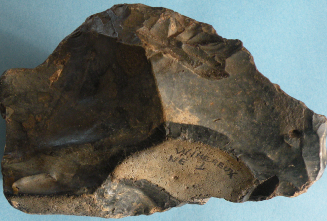
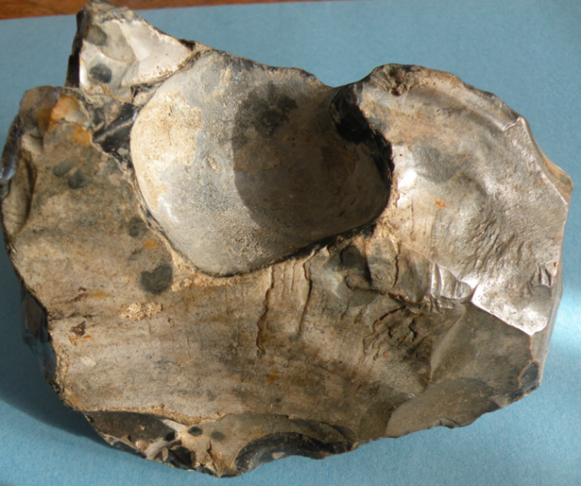
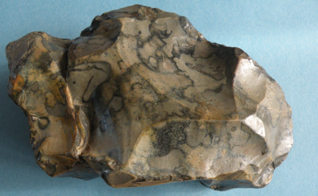
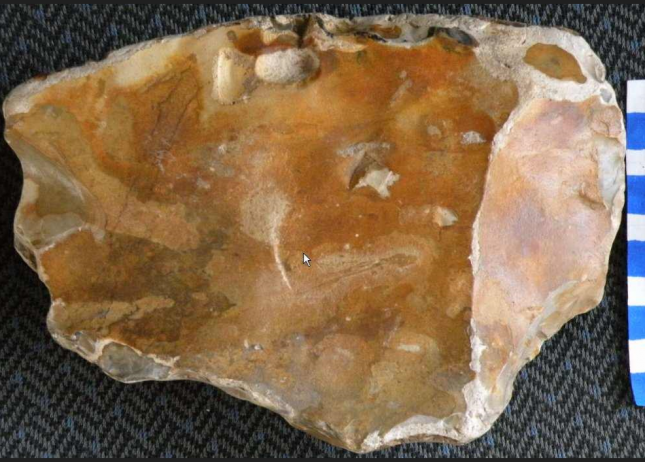
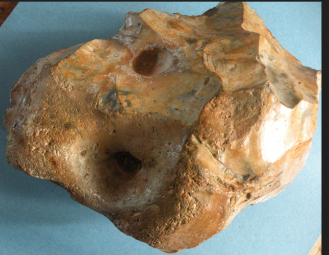
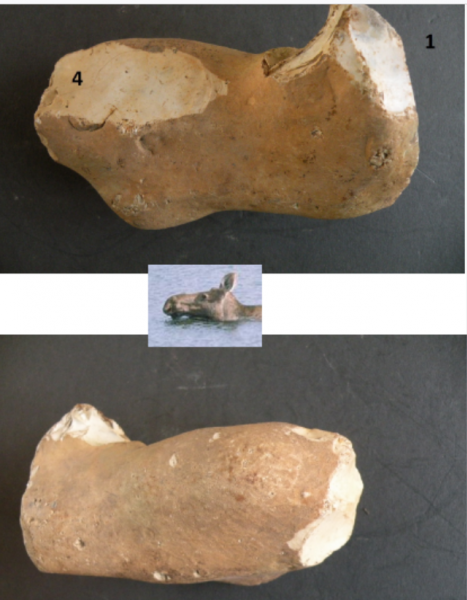
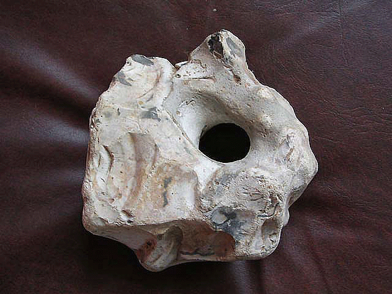
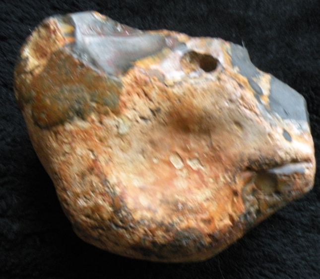

Catalogue des Artefacts (N° 1 à 8)
Inventaire détaillé des pièces taillées — Cliquer sur une photo pour l'agrandir
Tableau Récapitulatif
| N° | Dimensions | Type / Support | Caractéristiques Principales |
|---|---|---|---|
| N° 1 | 16 × 10 cm | Silex taillé bifacial | Œil marqué par enlèvements courts, mufle délicat. |
| N° 2 | 14 × 11 cm | Entièrement taillé | Contient 4 éléments clés, œil surdimensionné. |
| N° 3 | 15 × 9 cm | Façonnage type biface | Grand évidement (œil), mufle travaillé ; équilibre stable. |
| N° 4 | 18 × 13 cm | Éclat cortical épais (5 cm) | Création totale, contour découpé par de larges enlèvements. |
| N° 5 | 17 × 13 cm | Façonnage type biface | Enlèvements sur le pourtour, tient en équilibre. |
| N° 6 | 14 × 7 cm | Silex à patine jaune | Mâchoire et pointe taillées, silhouette d'élan. |
| N° 7 | 10 × 10 cm | Bloc massif taillé | Taille sur 2 plans perpendiculaires, front naturel. |
| N° 8 | 12 × 11,5 cm | Galet aménagé (Chopper) | Silex noir et feu, arête supérieure rectifiée. |
Fiches Détaillées
Artefact N° 1
Fossile Directeur
L'œil est particulièrement mis en valeur par plusieurs enlèvements courts et profonds. L'oreille est suggérée et le mufle a fait l'objet d'une taille délicate.
Artefact N° 2
Éléments complets
Contient les 4 éléments structurants principaux. L'arrière est nettement tranché par de larges enlèvements, en opposition avec le museau bien arrondi par de petites touches. L'oreille est nettement évoquée.
L'œil surdimensionné est le déclencheur qui a provoqué le choix du galet.
Artefact N° 3
Fossile Directeur
L'œil est suggéré par un grand évidement, le mufle est bien travaillé et l'oreille est mise en évidence. La pièce tient en équilibre et sa silhouette rappelle celle de la pièce N° 6 (évoquant un élan).
Artefact N° 4
Création Totale
Œuvre étonnante taillée dans un éclat cortical épais. La partie supérieure conserve son cortex naturel, mais le reste du contour est découpé par de larges enlèvements.
Tous les éléments sont présents : oreille soulignée, œil naturel agrandi par un éclat et dessous de mâchoire retouché.
Artefact N° 5
Équilibre stable
Découpé à la manière d'un biface par une série d'enlèvements réguliers sur tout le pourtour. La pièce présente une grande stabilité et tient naturellement en équilibre.
Artefact N° 6
Patine Jaune
Réunit les trois éléments principaux proprement taillés. La pointe supérieure est délimitée avec précision et le museau est arrondi. La forme de la mâchoire évoque un élan. Tient en équilibre.
Artefact N° 7
Bloc Massif
Pièce massive taillée énergiquement sur deux plans de frappe perpendiculaires à l'arrière. La pointe supérieure est façonnée par 5 enlèvements sur 3 plans.
Le devant naturel forme un « front de bison ». Tient en équilibre grâce à un arasement sous la base et une bosse naturelle (barbichette).
Artefact N° 8
Chopper
Galet aménagé de structure très fine. L'arête supérieure a été rectifiée par retouches, notamment au niveau du départ du mufle et à son extrémité.